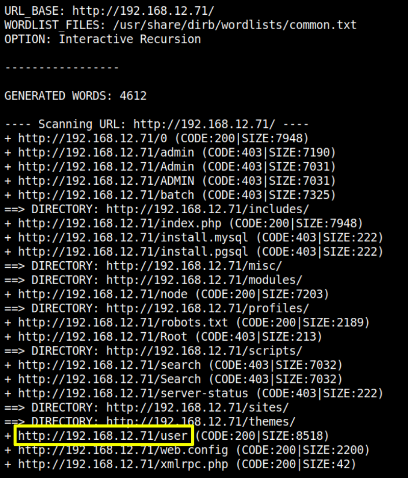
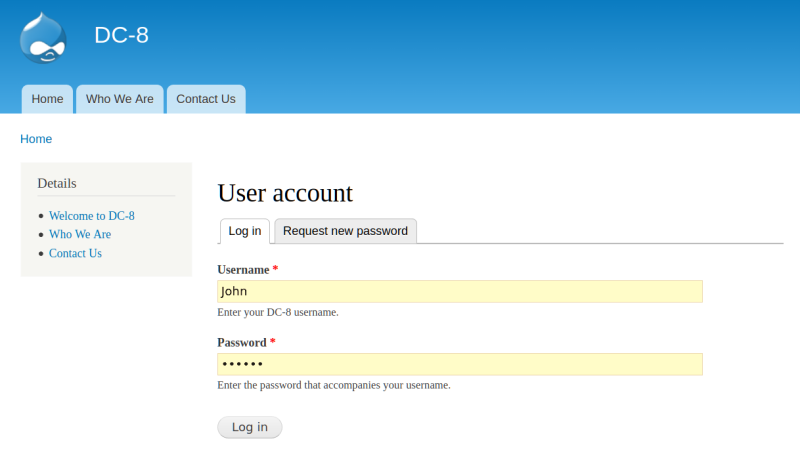
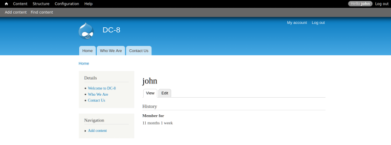

3.3 Directory Bruteforce using dirb
a) Let's enumerate the site.
$dirb
http
://
192.168.12.71
/
-R
Output:

As we can see above, there were a few files and folders that returned an HTTP 200 response code. There is a directory named “user” available on the target application. Let’s open it in the browser.
b) Open the page “user” found above.
Credentials:
Username: john
Password: turtle
http://192.168.12.71/user


Index